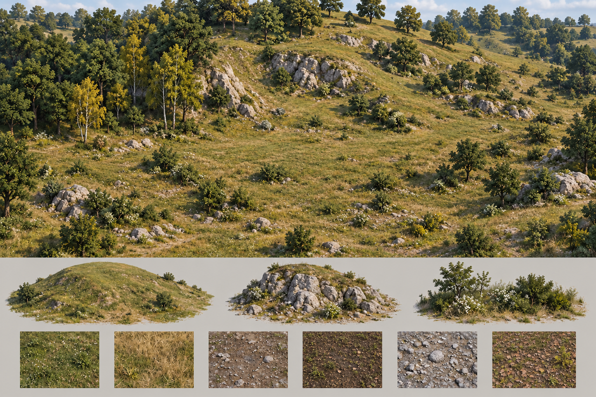
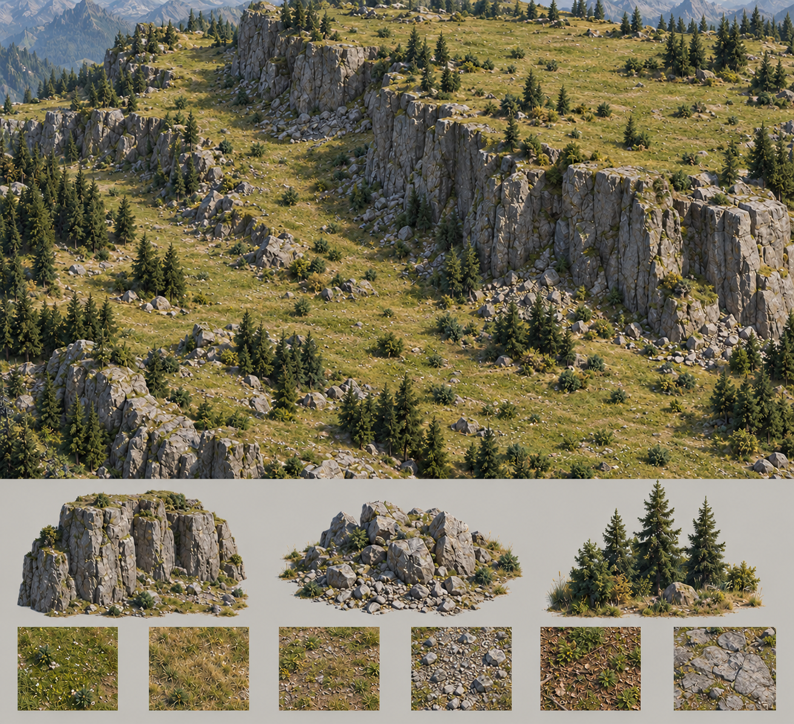
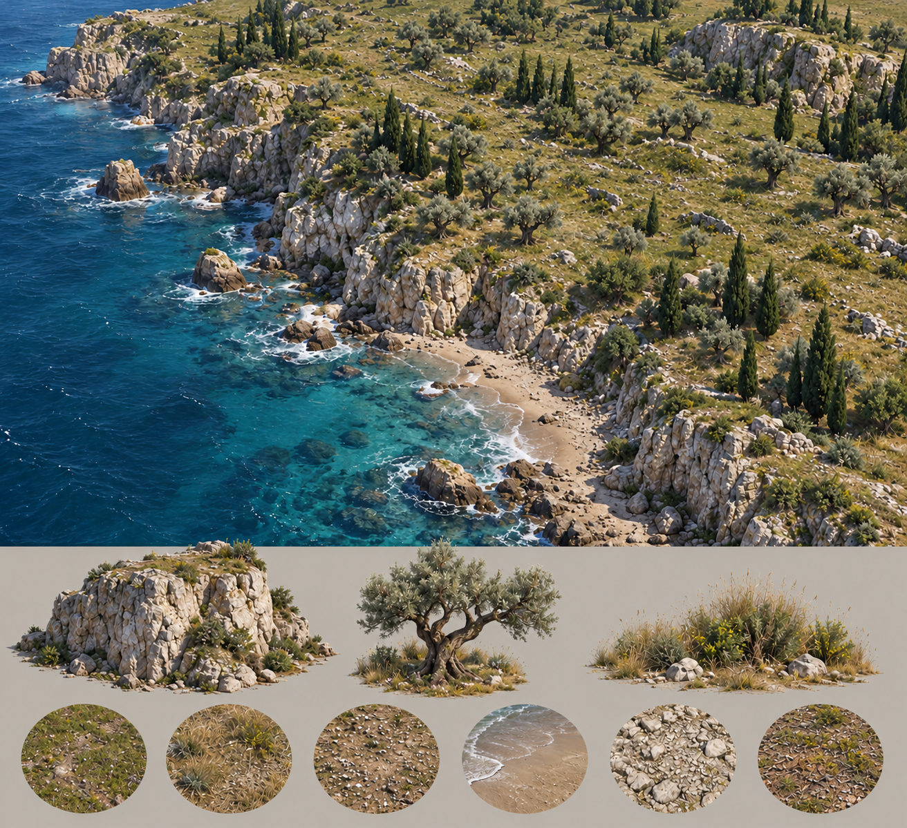
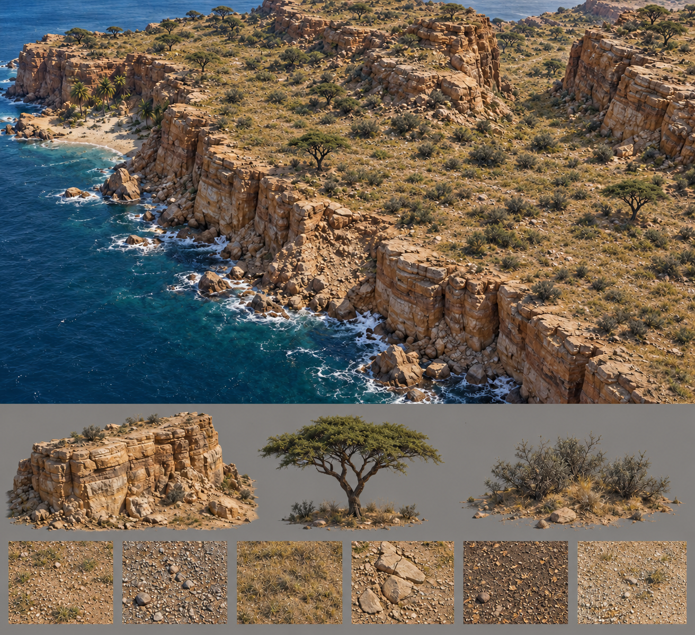
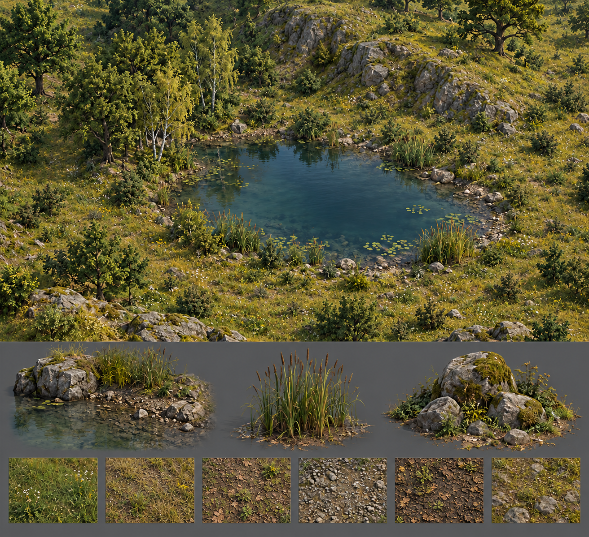
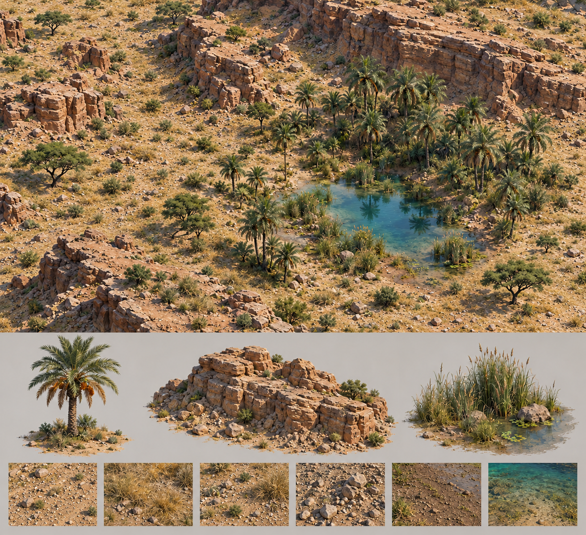
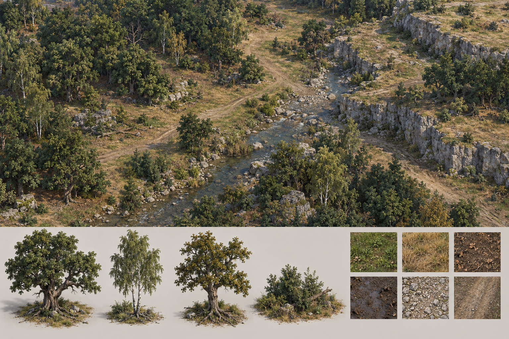
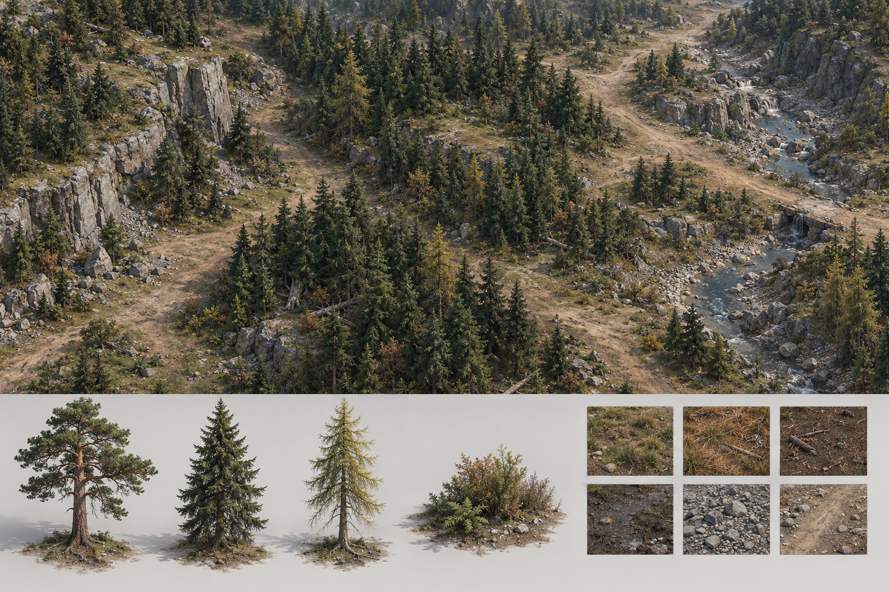
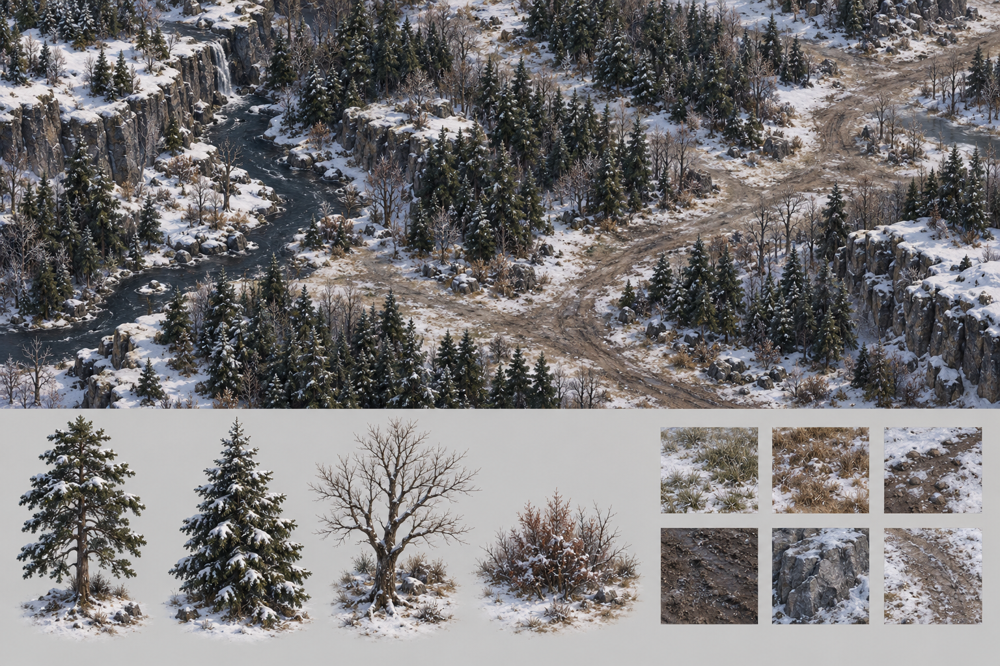
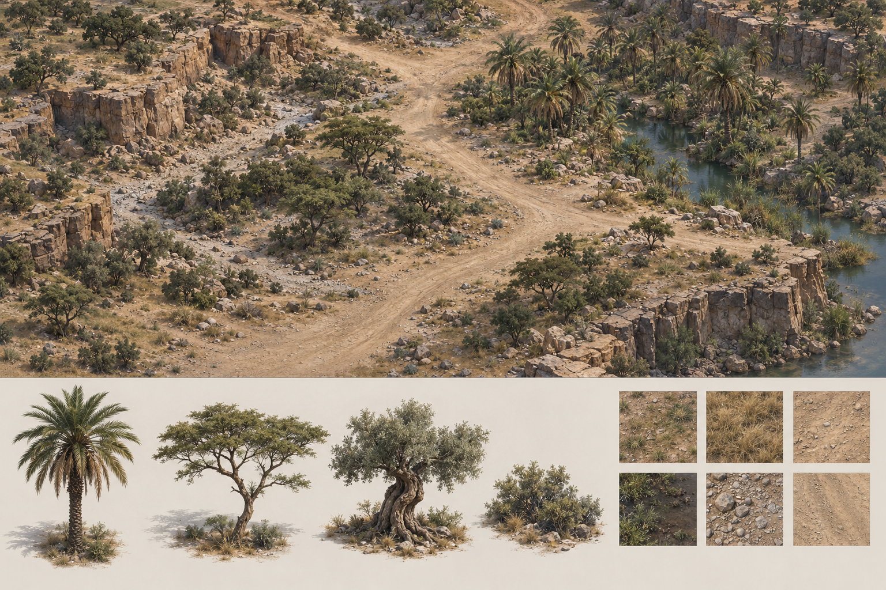

05 · 草原斜坡 · 无路


柔和圆坡、自然草色与高度变化，局部裸岩、落叶和不连续裸土。留出开阔地，但不画人工路径。
第一轮 Unity 参考之一；底部地形块仅为形态说明，不是直接可导入网格。原稿留档当前方向：无人踏足的末世荒野，不画小路、车辙或人为铺面。统一为写实倾向的 RTS 斜俯视：自然色彩、略冷阴影、适量暖光；树林、悬崖、海岸和封闭水池划分区域，军队从自然开阔地穿行，不依赖道路。
这是新生成的二维美术评审图，不是 Unity 实机画面，也不是可直接使用的模型或 PBR 材质。下方材质小样仅供外观参考。整体图不要直接交给 Tripo 生成一个大模型；选定后，树、岩石等资产应分别做独立图与视图。
用户选择先将 05 草原斜坡＋07 海岸＋09 水池做成独立 Unity 环境预览。下方 05–10 默认显示无路荒野修订版，原图保留；新布局不生成道路或河流。第一批 01–04 是历史地域草稿，里面的道路和河流不作为本次实施方向。Unity 预览正在独立实现，尚未宣称达到概念图质量或完成玩法测试。

柔和圆坡、自然草色与高度变化，局部裸岩、落叶和不连续裸土。留出开阔地，但不画人工路径。
第一轮 Unity 参考之一；底部地形块仅为形态说明，不是直接可导入网格。原稿留档
上层平缓台地、下层谷地、自然缓坡与陡崖分开。灰岩、碎石、草和林下落叶自然过渡，无人为路线。
独立巨岩和针叶模型仍待来源与模型制作；不能用小石头随机堆砌代替。原稿留档
大海沿地图一侧延伸，岸边浅、远处深；石灰岩崖、草坡、散落土石和自然沙湾构成陆地层次。
第一轮 Unity 参考之一；橄榄／柏树属于待补地域模型，现成通用树不是同种替代验收。原稿留档
有层理的砂岩断崖、稀疏干草、旱生树与海湾。天然风化地表没有道路、车辙或人的痕迹。
北非树与海枣需独立模型，本轮是概念评审。原稿留档
独立封闭池塘，无河流入出口、无环岸道路；不规则岸线由草、石子、湿泥和水生植物交错构成。
第一轮 Unity 参考之一；芦苇、水生植物、独立巨石模型暂无源，缺项不能靠临时拼模型隐藏。原稿留档
湿润池边集中海枣林，远离水的区域稀疏旱灌；风化沙地自然开阔，不画穿林小路或车辙。
只有封闭水池，不加河流。模型制作在概念确认后按资产逐个进行。原稿留档
橡树型厚树冠＋桦树型细树干；林下叠加落叶、泥土、草与石子。成片森林构成资源区域，林缘更疏。三棵独立树、低灌木和六种地表外观小样。
欧洲树种方案是待评审的新方向；不是现有通用树已经完成的效果。
松树型＋云杉型＋较稀疏的落叶松型；灰色岩壁、碎石坡、针叶地表和溪流形成高地通道，不做整片裸大平原。
针叶树是现有分类资产的缺项；需要正式 Blender 模型再接入。
带雪常绿针叶树＋无叶阔叶树；保留深绿、树皮与土路的色彩，避免全白发糊。积雪覆盖不等于树或资源消失。
可与高山树共享基础模型，但雪覆盖与无叶版本需在 Blender 中明确制作并验收。
半干旱区稀疏枝叶、海枣绿洲与地中海边缘橄榄树型；依水分布，不把欧洲绿树林简单染黄。沙土、砾石、干草、砂岩与湿润绿洲土混合。
这是过渡地带的组合美术方案，不表示同一类沙漠每处都生长相同植物。纯沙海可以无树，但整张可玩地图不应因此没有木材来源。| 用途 | 呈现 | 逻辑建议（尚未实施） |
|---|---|---|
| 资源林 | 可识别的成片、正常大小的立体树 | 同一森林格定义驱动模型、占地阻挡和木材产出。伐木场预览覆盖的有效格及每分钟收益，禁止重复计算已占用采集格。 |
| 装饰植被 | 低草、灌木、林缘花草；远处不可达背景植被 | 不注册资源、不阻挡军队。不要把可达的整片大树伪装成无收益装饰；可交互树木应能明确显示资源身份。 |
建议延续当前的持续产出型森林，而不是新增逐棵砍伐耗尽；树林同时帮助形成防线与扩张路线。地域改变树种和分布，不自动改变同一有效资源格的收益。若后续要地块肥沃度、稀疏林低收益，应放到共享资源配置中，而不是按叶片数量估算。
现状核对：样场树已经是真实 3D 模型实例，暂时只负责画面；正式代码已有森林格、林区阻挡和伐木场收入。现有暂定伐木规则为半径 7 格、每有效格 10 木／分钟（资源等级另有倍率），本轮未修改数值。已作者模型的海岸试玩目前仍隐藏伐木场，需要批准的建筑模型和森林资产接入，不能把“代码存在”误认为“这个试玩已可采集”。
性能上建议林区统一生成导航边界，树共享材质、分批绘制、使用合适 LOD 与视野裁剪，不给每一片叶子或每棵树加独立运行脚本。当前通用树两个 LOD 仍有约 8.1 万／4.7 万三角，后续森林密集战斗必须单独测量，不能直接承诺不卡。
| 内容 | 推荐路线 | 依据 |
|---|---|---|
| 树、灌木、突出地表的石头 | 现成合规 3D 素材优先，缺少的地域／造型再用概念图生成模型 | 轮廓与遮挡来自几何体，树叶可用透明裁切贴图，不需每片叶都是厚实体。 |
| 草地、干草地、泥土、泥地、石砾 | 可平铺 PBR 材质＋地表混合 | 保留六层资产，其中 Road 在本次荒野预览权重为零。小样不是纹理成品，不将整张地图送 Tripo 做网格。 |
| 悬崖、高地 | 地形高度＋岩壁材质；轮廓突出的岩块用批准模型 | 地形、资源占地和导航范围要一致；现有渲染管线不迁移。 |
| 海面、封闭水池 | 地形海床／池底＋水面渲染 | 本次不做河流；可行走边界应与实际地形一致，不能仅靠视觉判断浅水能通过。 |
免费候选：Poly Haven Fir Tree 01 提供 CC0 针叶树与 LOD，但完整源约 800 万三角，不能原样铺满 RTS 地图；Palm Tree Pack Free 列为免费，并列出 Built-in 管线兼容（2021.3.30f1）。它尚未在本项目版本验证，树种、面数和许可证再分发限制也需导入检查。免费不代表可把商店原包上传公开 Git。本轮只找候选，没有下载／导入这些包。
所有最终新树仍先进入 art/Blender主文件/ZombieGame_Environment.blend，记录来源和验收，再给 Unity 引用。概念图生成保留现有所有 .blend 和未保存工作，没有新建替代游戏模型；Unity 按用户选择另做基础地形／水面的独立预览，不改变正式玩法。
以上游戏机制来自官方资料；双用途树分类、模型复用和地图生产流程是对我们项目的设计建议，不是对这些游戏内部代码或面数的推测。